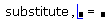
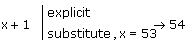

Substitutions |
To replace all occurrences of a variable in an expression with a number, another variable, or an expression, select the expression and do the following:

This replaces all occurrences of the variable var with expr.
Alternatively, you can press [Ctrl] [Shift] [.] and type the keyword "substitute," followed by a comma, in the placeholder that appears. Then type an equation of the form var = expr, using the Boolean equals sign.
5x2 + 3x + 9 substitute, x = 2 → 35
5x2 + 3x + 9 substitute, x = s + t → 5 · (s + t)2 + 3 · s + 3 · t + 9
x + y substitute, x = 13 → 13 + y
To substitute values for additional variables, type a comma plus a comma-separated list of additional equations of the form var = expr, again using the Boolean equals sign. For example:
x + y substitute, x = 13, y = 12 → 25
To return results that are not fully simplified, add the modifer "raw" after "substitute." For example,
x + y substitute, x = 13, y = 12, raw → 13 + 12
Note: If you have previously assigned a value to a variable you are substituting for, you might not get the result you expect. For example,
x:= 5
x + 1 substitute, x = 53 → 6
This happens because Mathcad first replaces x with its assigned value 5 in the second line, and then evaluates the expression 5 + 1 to get
6 substitute, 5 = 53
Since 5 does not appear to the left of "substitute," Mathcad simply returns 6.
To avoid this problem, you can either clear the substitution variable's symbolic value by typing x:= x, as described in Clearing the Symbolic Value of a Variable, or use the keyword "explicit" to temporarily suppress the assigned value of x as follows:
